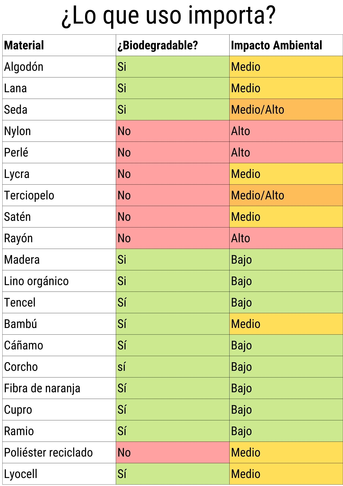

Este gráfico permite darnos claridad sobre la real importancia que tiene el elegir materiales a la hora de comprar ropa.
Los datos fueron recopilados luego de una intensa busqueda sobre el impacto de diversas materialidades que son utilizadas a la hora de fabricar ropa.